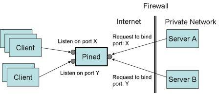

Pined is a proxy server to enables to access a private server inside a firewall.
In your server application, replace socket API call, such as bind and accept, into wrapper call (provided in libpinesock) for these APIs so that the server register its listening port to an Pined. The Pined will create a server socket behalf of the server in a private network. The Pined relays a connection to the private sever when a client connect to the Pined.
A typical use of pined is as follows:

// create a socket for listening so = socket(AF_INET, SOCK_STREAM, 0); // set psaddr to the address of pined memset(&psaddr, 0, sizeof psaddr); psaddr.sin_family = AF_INET; psaddr.sin_port = htons(8888); psaddr.sin_addr.s_addr = pserver_ipaddr; // requet to pined to bind socket with port 10000 ps_bind(so, 10000, (struct sockaddr *)&psaddr, sizeof psaddr); // request to listen ps_listen(so, SOMAXCONN); // wait connection from client cso = ps_accept(so, NULL, NULL); // serve for client read(cso,...) ...